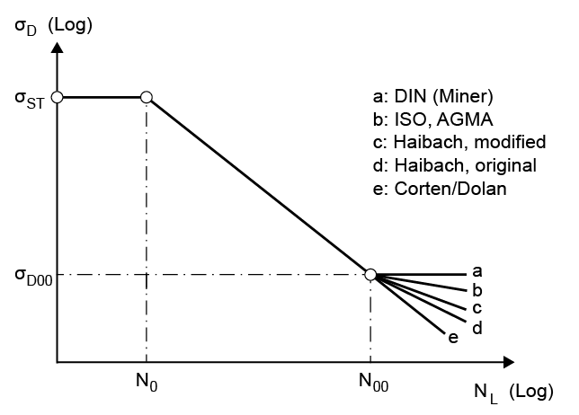

|
|
|


在疲劳极限范围内对S-N曲线（Woehler线）的修正
在标准Woehler曲线图中，疲劳极限范围在特定的载荷循环次数处达到。从这一点开始，即使载荷循环次数增加，动强度也不再变化。这种行为称为"按照Miner"。
然而，较新的研究表明，实际上并不存在所谓的无限寿命强度，并且S-N曲线（Woehler线）应在无限寿命强度范围内进行修正。
因此，在疲劳极限范围内，您可以选择以下修正形式：
- Miner（对应于DIN 3990第2、3和6部分）。斜率∞（水平）
- 按照Corten/Dolan。斜率p
- 按照Haibach（修正）。斜率2*p
- 按照Haibach（原始）。斜率2*p-1（根据[18]）
此处提到的斜率p与S-N曲线（Woehler线）按ISO、AGMA或DIN在时间相关域内（由YNT或ZNT确定）相匹配。另见ISO 6336-6 [19]。
下图（见图15.7）显示了相应的特性。经验表明，使用Miner方法基于载荷谱进行寿命计算得到的结果过于乐观。我们建议您使用Haibach方法。

图15.7：无限寿命强度模型
关于按ISO或DIN计算的说明：
轮齿弯曲的S-N曲线（Woehler线）在时间相关域（N0与N00之间）内的斜率，使用静态和疲劳情况下的YNT、YdrelT、YRrelT和YX系数来定义，但在疲劳域（NL > N00）内，静态和疲劳情况下仅使用YNT系数。对于点蚀，同样适用ZNT、ZL、ZV、ZR和ZW系数。这对应于ISO 6336中疲劳域所用的方法。然而，这意味着按照Corten/Dolan规则，S-N曲线（Woehler线）在N00处会出现拐点。
例如：对于渗碳淬火钢，疲劳域内S-N曲线（Woehler线）的斜率为13.2，但在疲劳极限范围内约为10，具体取决于YdrelT等的精确值。
如果所有系数（YdrelT等）都使用"自定义输入"设置为1.0，则S-N曲线（Woehler线）将是恒定的。
注意：
保存的*.z??文件和STANDARD.z??文件包含ZS.CortanDolanFactors变量。该变量可设置为=true。这可强制程序在疲劳范围内也外推YdrelT、YRrelT、YX、ZL、ZV、ZR和ZW系数，这与ISO定义相反。
Modification of S-N curve (Woehler lines) in the range of endurance limit
In a standard Woehler diagram, the range of endurance limit is reached at a particular number of load cycles. From this point onwards, the dynamic strength no longer changes even when the number of load cycles increases. This behavior is called "according to Miner".
However, more recent investigations have revealed that there is actually no such thing as an infinite life strength and that the S-N curve (Woehler line) should be modified in the infinite life strength range.
In the range of endurance limit, you can therefore select the following modified forms:
- Miner (corresponds to DIN 3990, Parts 2, 3 and 6). Pitch ∞ (horizontal)
- According to Corten/Dolan. Pitch p
- According to Haibach modified. Pitch 2*p
- According to Haibach original. Lead 2*p-1 (according to [18])
The lead p mentioned here matches the S-N curve (Woehler line) according to ISO, AGMA or DIN in the fixed period range, determined from YNT or ZNT. See also ISO 6336-6 [19].
The figure below (see Figure 15.7) shows the corresponding characteristics. Experience has shown that performing a service life calculation with load spectra using the Miner method returns results that are far too optimistic. We recommend you use the Haibach method of approach.
Figure 15.7: Infinite life strength models
Note concerning calculations according to ISO or DIN:
The pitch (slope) of the S-N curve (Woehler line) for tooth bending in the time-dependent domain (between N0 and N00) is defined using the YNT, YdrelT, YRrelT and YX coefficients for the static and endurance cases, but in the endurance domain (NL > N00), only the YNT coefficient is used for the static and endurance cases. The same applies for pitting with the ZNT, ZL, ZV, ZR and ZW coefficients. This corresponds to the procedure used in ISO 6336 for the endurance domain. However, this does mean that buckling occurs on the S-N curve (Woehler line) at N00, according to the Corten/Dolan rule.
As an example: for case-carburized steel, the pitch (slope) of the S-N curve (Woehler lines) in the endurance domain is 13.2, but in the range of endurance limit, it is approximately 10, depending on the precise values for YdrelT, etc.
If all the coefficients, YdrelT, etc., are set to 1.0 using "Own Input", the S-N curve (Woehler line) will be constant.
Note:
The saved *.z?? files and the STANDARD.z?? file contain the ZS.CortanDolanFactors variable. This can be set to = true. This can force the program to also extrapolate the YdrelT, YRrelT, YX, ZL, ZV, ZR and ZW coefficients in the endurance range, in contrast to the ISO definition.